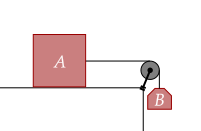
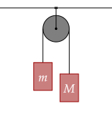
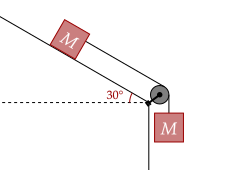
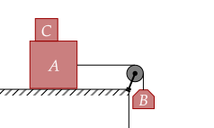
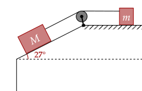

In the previous tutorial, you may have noticed that the direction of acceleration for every exercise and problem is the same. This tutorial introduces systems which have different directions of acceleration. Even then, the same strategy applies.
To make it simple, all strings in this tutorial are massless and inextensible, which means the tension is uniform throughout, and the magnitude of acceleration throughout the entire system is constant. Further, all pulleys are massless and frictionless.
Exercise 1a
(LSM P6.43a) Two blocks are connected by a massless rope as shown below. The mass of the block on the table is 4.0 kg and the hanging mass is 1.0 kg. The table and the pulley are frictionless. Find the acceleration of the system.

Solution
The vertical forces on the big block are balanced, thus the only net force must be the tension pulling the box.
Now, for the hanging mass, there are no horizontal forces, so we can ignore the horizontal motion. The acceleration of that block is affected by two forces, the weight, and the tension in the rope.
Here, we set the acceleration as negative, since the block goes down.
We have a value for the tension, so we substitute that in.
Substituting in our values, we can get the acceleration of the system.
Exercise 1b
(LSM P6.43b) Find the tension in the rope.
Solution
We will use the acceleration solved in the previous part, albeit solved to more decimal places.
Exercise 2
(LSM P6.42) The device shown below is the Atwood’s machine, with . Assuming that the masses of the string and the frictionless pulley are negligible, find an equation for the acceleration of the two blocks and an equation for the tension in the string.

Solution
We will assume that the bigger mass will go down (by intuition). Thus, its acceleration is negative.
There are no net horizontal forces, so we only care about the vertical direction. For the smaller mass, its acceleration is positive, with the two net forces being the tension and the weight itself.
Now, we have an equation for the tension. For the bigger mass, it has the same two forces, but it has a negative acceleration.
Now, we substitute in the value of tension that we found.
We can now substitute this in to the former equation for the tension.
The above machine was named after George Atwood, who made the machine in 1784. Further, the above solution made use of solving for the acceleration by analyzing both masses separately. However, we may also do it by analyzing the entire system all at once.
Exercise 3
(LSM P6.95) As shown below, if , what is the tension in the connecting string? The pulley and all surfaces are frictionless.

Solution
The block on the inclined plane is pulled by the tension of the rope and its weight. We have to resolve the weight into its horizontal and vertical components.
The hanging block has negative acceleration, and two vertical forces, being that of the tension and the weight.
We substitute in our value for the acceleration.
This is the equation. Now, all we do is plug in our values.
We substitute in our value for the acceleration.
We now add friction into the mix, which makes it a little more complicated, but it should still be doable.
Exercise 4
(HRK E5.22a) is a 4.4-kg block and is a 2.6-kg block. The coefficients of static friction between and the table is 0.18. Determine the minimum mass of the block that must be placed on to keep it from sliding.

Solution
If the block is kept at rest due to friction, that mean the acceleration of the whole system is zero.
We will first analyze the forces on the hanging mass. The only forces acting on it are vertical forces, being the tension and the weight.
Now, we analyze the vertical forces of the block . We have the force of block on the block, which is its weight, the weight itself, and the normal force.
The net horizontal force is zero, which is the tension and the static friction. We use the maximum static friction as we are trying to minimize the mass.
Now, we analyze the vertical forces of the block . We have the force of block on the block, which is its weight, the weight itself, and the normal force.
We now substitute both of our values for the tension and the normal force.
Plugging in, we get the answer is kg.
Exercise 5
(HRK E5.28a) Block has a mass of 4.20 kg and block has
a mass of 2.30 kg. The coefficient of kinetic friction between
and the horizontal plane is 0.47. The inclined plane is frictionless. Find the acceleration of the blocks.

Solution
The acceleration of the more massive block is negative, going down, with the little block having positive acceleration. We begin our analysis with the block on the incline, which has its forces be the tension and the horizontal weight.
The block on the flat plane has two forces as well, being the kinetic friction which opposes the motion, and the tension. The normal force is just equal to the weight here.
Substitute in our value for the tension.
When we input the values, we have the acceleration is about 1.2m/s².